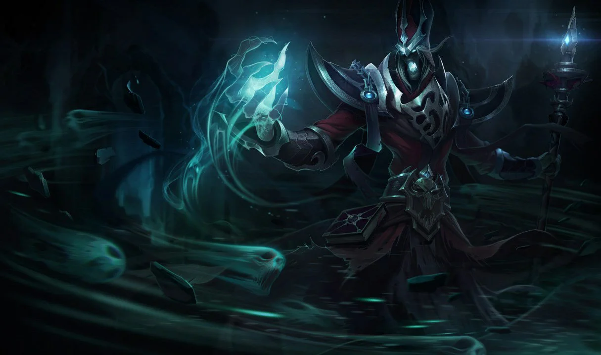
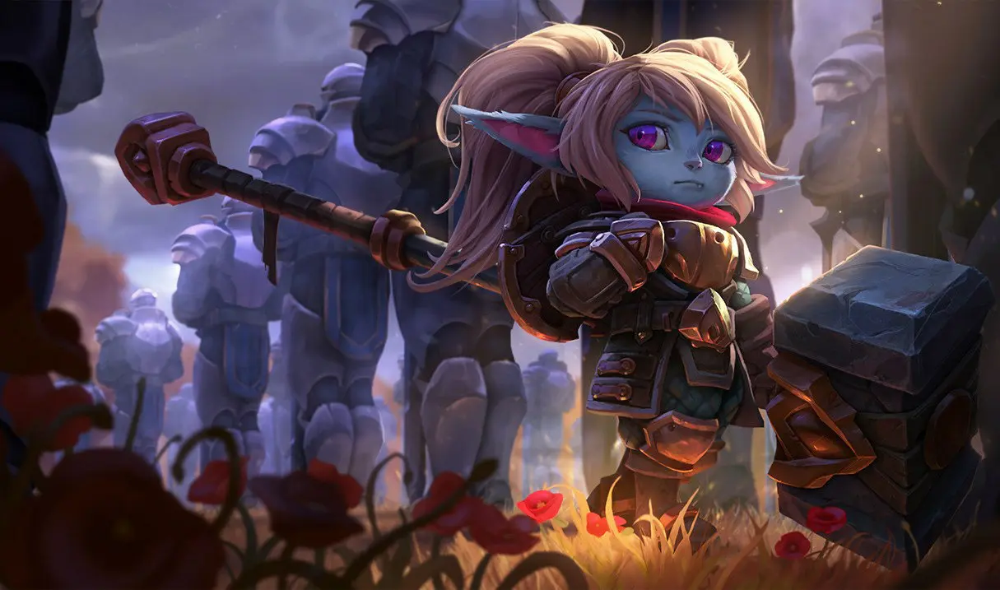
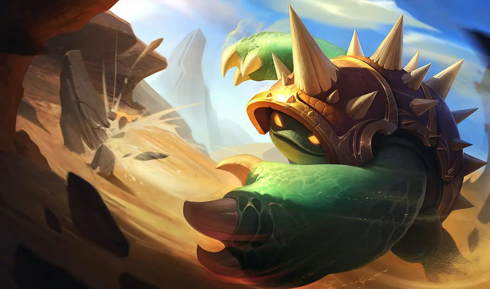
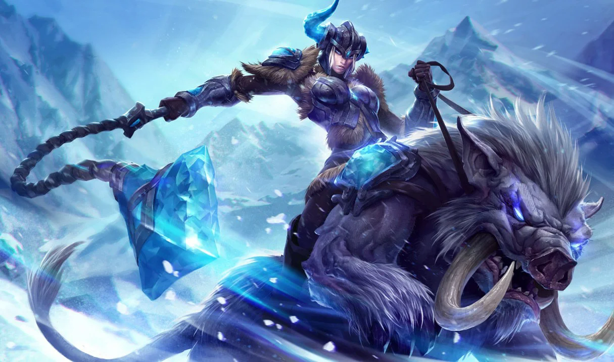
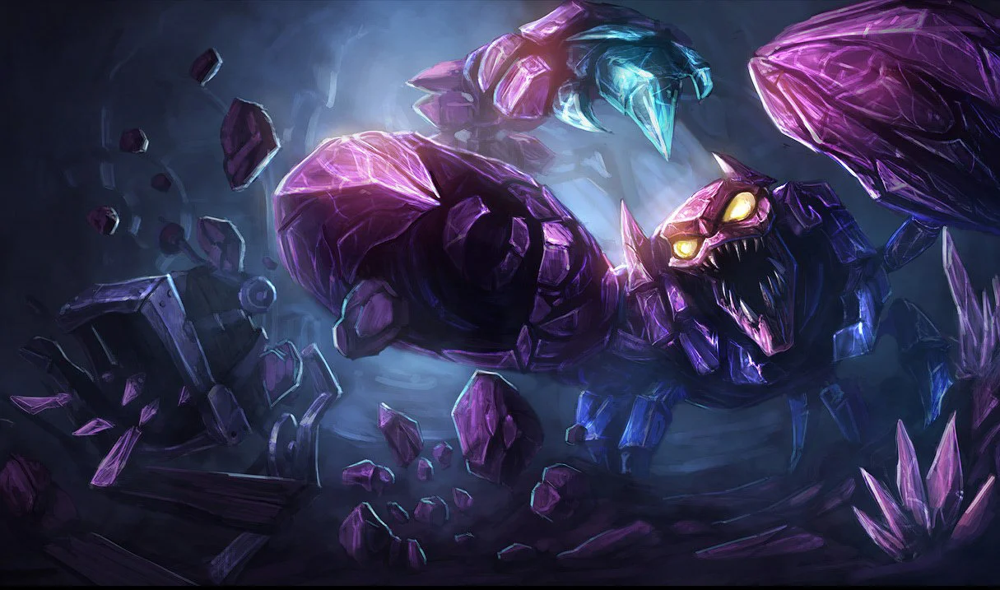
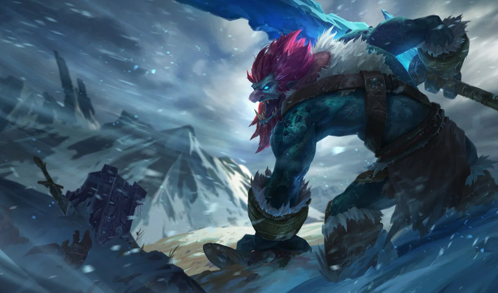
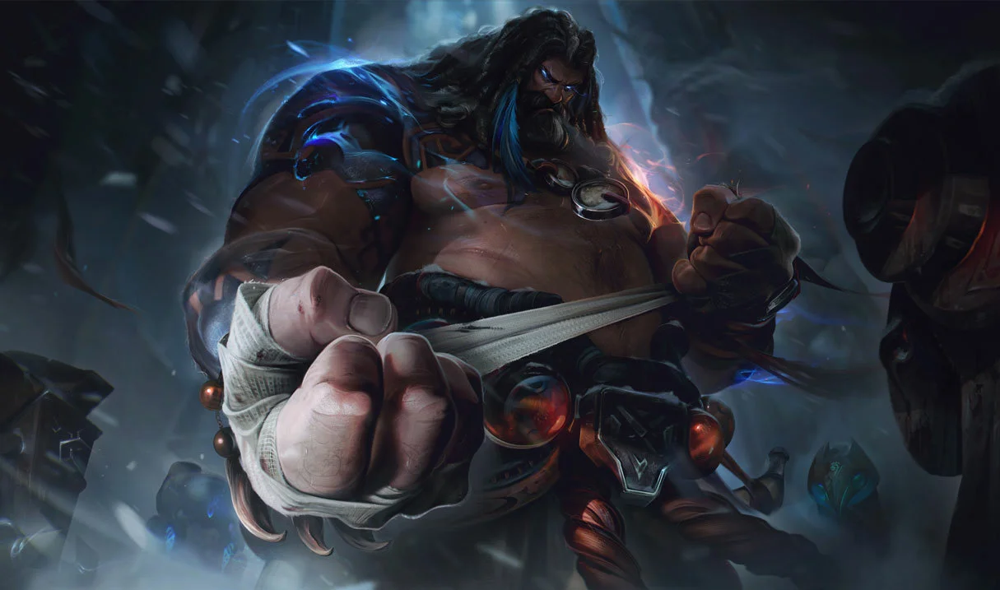
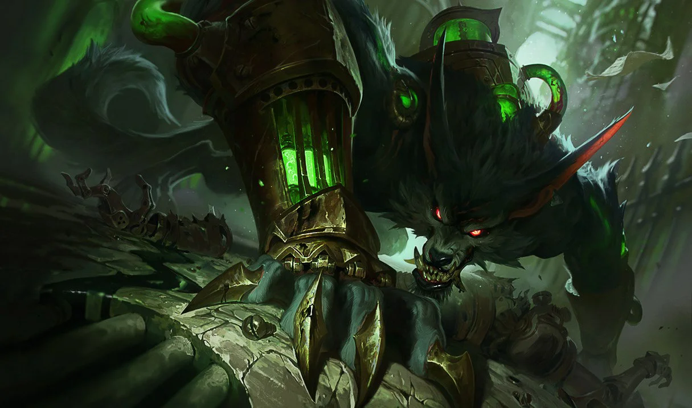
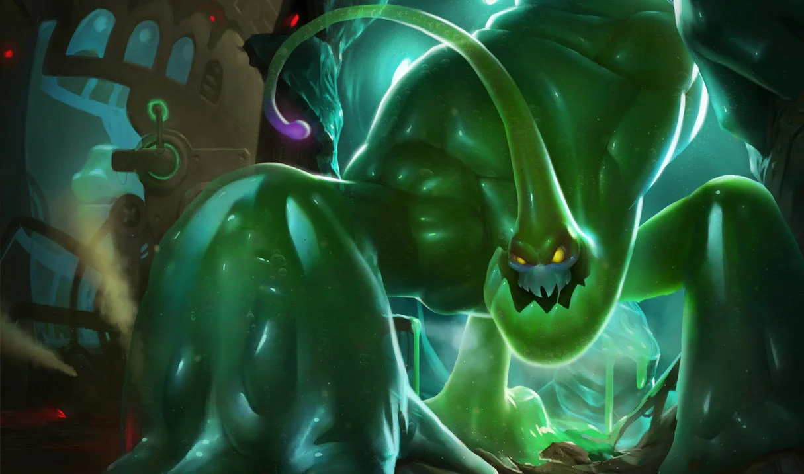

La Jungle
Karthus
Liche
Introduction :
Héraut de l'oubli, Karthus est un esprit immortel dont les chants ensorcelants préludent à l'horreur de son apparition. Les vivants craignent l'existence éternelle des morts-vivants, mais Karthus n'y voit que beauté et pureté, une union parfaite de la vie et de la mort. Lorsque Karthus émerge des Îles obscures, c'est pour apporter aux mortels la joie de la mort dont il est le vibrant apôtre.
Raison :
Sa compétence Ultime qui peut dévasté une équipe entière.
Poppy
Gardienne du marteau
Introduction :
Runeterra ne manque pas de braves champions, mais peu peuvent se targuer d'être aussi tenaces que Poppy. Armée du légendaire marteau d'Orlon, faisant deux fois sa taille, cette yordle déterminée cherche depuis d'innombrables années le « héros de Demacia », qui serait le dépositaire légitime de cette arme. En attendant, elle part inlassablement au combat, repoussant les ennemis du royaume à grands coups de marteau.
Raison :
Sa compétence Ultime lui permet de projeter plusieurs ennemis sur une énorme distance.
Rammus
Tatou blindé
Introduction :
Beaucoup l'idolâtrent, certains le méprisent, mais tous restent perplexes devant l'énigmatique Rammus. Protégé par une carapace cloutée, il inspire des théories de plus en plus variées sur ses origines : demi-dieu, oracle, simple bête transformée par la magie... Quelle que soit la vérité, Rammus n'est pas très bavard et ne s'arrête pour personne tandis qu'il parcourt le désert de Shurima.
Raison :
Intuable par une majorité de personnages du jeu.
Sejuani
Fureur du nord
Introduction :
Sejuani est l'impitoyable chef de guerre sublimée de la Griffe hivernale, l'une des tribus les plus redoutées de Freljord. La survie de son peuple est une lutte constante et désespérée contre les éléments. Pour résister aux rigueurs de l'hiver, il doit lancer des assauts contre les Noxiens, les Demaciens et les Avarosans. Sejuani mène elle-même la charge des plus dangereux de ces assauts en chevauchant son sanglier drüvask, Bristle, et en agitant son fléau de glace pure pour congeler et réduire en miettes ses ennemis.
Raison :
Relativement solide, possède aussi beaucoup de Contrôle de Foule.
Skarner
Gardien de cristal
Introduction :
Skarner est un immense scorpion cristallin venu d'une vallée cachée de Shurima. Issus de l'ancienne race des Brackerns, Skarner et les siens sont connus pour leur grande sagesse et leurs liens profonds avec la terre : leur âme a fusionné avec de puissants cristaux de vie qui contiennent les pensées et les souvenirs de leurs ancêtres. À une époque si reculée que nul ne s'en souvient, les Brackerns sont entrés en hibernation pour échapper à la destruction magique, mais des événements menaçants viennent de réveiller Skarner. Seul Brackern éveillé, il lutte pour protéger les siens contre ceux qui cherchent à les blesser.
Raison :
Possède énomement de Contrôle de Foule et un grande mobilité.
Trundle
Roi des trolls
Introduction :
Trundle est un troll massif, sournois et malicieux. Il n'y a rien qu'il ne puisse soumettre à sa volonté avec son gourdin, pas même Freljord. Extrêmement territorial, Trundle traque tous ceux qui sont assez fous pour pénétrer sur ses terres. Ensuite, armé de son imposante massue en glace pure, il fait trembler ses ennemis avant de leur planter des éclats de glace dans le corps et de se moquer d'eux tandis que la toundra absorbe leur sang.
Raison :
Possède une grande mobilité en plus de ces dégâts assez important surtout envers les tanks.
Udyr
Gardien des esprits
Introduction :
Udyr est le plus puissant des Gardiens des esprits, il communie avec l'ensemble des esprits qui habitent Freljord. Il comprend leurs besoins avec empathie et il est capable de canaliser et de transformer leur énergie éthérée pour alimenter son propre style de combat primitif. Il cherche l'équilibre intérieur pour que son esprit ne se perde pas parmi les autres, mais il cherche également l'équilibre à l'extérieur, car le paysage mystique de Freljord ne peut prospérer qu'avec la croissance engendrée par le conflit et la lutte. Udyr sait qu'il faut faire des sacrifices pour tenir à distance la stagnation des temps de paix.
Raison :
Relativement solide et fait beaucoup de dégâts en zone.
Warwick
Fureur déchaînée de Zaun
Introduction :
Warwick est un monstre qui chasse dans les rues grisâtres de Zaun. Transformé par des expériences horribles, son corps est désormais muni d'un système intriqué de chambres et de pompes qui injecte une rage alchimique dans ses veines. Surgissant des ombres, il traque les criminels qui terrorisent les profondeurs de la ville. Warwick est attiré par le sang, dont l'odeur le rend fou. Si sa proie saigne, elle n'a aucune chance de lui échapper.
Raison :
Fait énormement de dégâts et possède une énorme régénération.
Zac
Arme secrète
Introduction :
Zac est le produit d'une fuite toxique qui, dégoulinant par une veine techno-chimique, se transforma en bassin dans une profonde caverne du Puisard de Zaun. En dépit de ses humbles origines, Zac a évolué pour passer du stade de dépôt primordial à celui d'être pensant qui se faufile dans les canalisations de la ville. De temps en temps, il émerge pour aider ceux qui ne s'en sortent pas seuls ou pour reconstruire les infrastructures en mauvais état de Zaun.
Raison :
Grande mobilité en plus d'avoir beaucoup de Contrôle de Foule et une potentielle seconde vie.